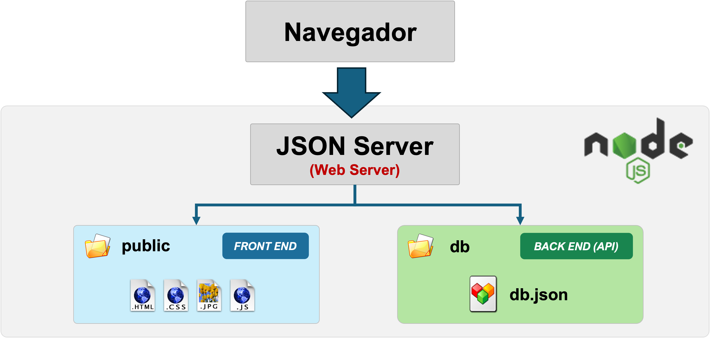
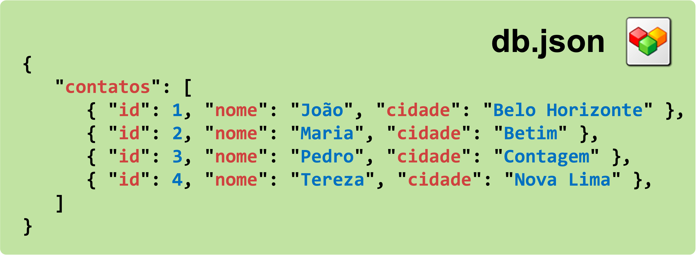

Boas-vindas
Esta é a home-page de exemplo do template do projeto de Trabalho Interdisciplinar 2 - Front End.
Este conteúdo foi criado para exemplificar como montar o seu site integrado ao back end baseado em JSON Server e, opcionalmente, ao módulo de login já disponível no template.
Ao montar o site do seu projeto, adapte este conteúdo à sua necessidade ou comece do zero, removendo tudo o que estiver aqui.
Como este ambiente está organizado
O projeto é dividido em duas partes que rodam juntas quando você executa npm start:
- Front end (pasta
public): os arquivos estáticos (HTML, CSS e JavaScript) que o navegador do usuário carrega. É aqui que você vai trabalhar a maior parte do tempo. - Back end / API (pasta
db): o arquivodb.json, servido automaticamente pelo JSON Server como uma API REST.
Arquivos do site (Front End)
Para montar seu site, edite os arquivos existentes e crie novos arquivos dentro da pasta public. Sugerimos organizá-la assim:
- Pasta
assets: arquivos de formatação (CSS), scripts (JS), imagens (JPG, PNG, GIF, SVG etc.), fontes (TTF) e outros recursos utilizados por todo o site. - Pasta
modulos: os arquivos de cada funcionalidade do site. Crie uma sub-pasta por módulo — pode ser útil também para dividir o trabalho entre os integrantes do grupo. - Arquivo
index.html: a "home page" do site (este arquivo).
Módulo de Login (opcional)
O template inclui um módulo pronto de cadastro e login de usuários, localizado em modulos/login/ e assets/js/login.js. Use-o como está, adapte-o ou remova-o — fica a critério do seu grupo.
Testando o módulo de login
- Clique em Minha conta, no topo da página. Como essa página é protegida, você será automaticamente redirecionado para a tela de login.
- Informe um dos usuários de exemplo já cadastrados no
db.json:admin— senha123user— senha123
- Após o login, você volta automaticamente para
home.html, que lê os dados do usuário nosessionStoragee permite fazer logout de volta para esta home pública. - Também existe uma segunda página protegida de exemplo, em
modulos/login/index.html, que lista todos os usuários cadastrados.
Protegendo uma página com login
Para exigir que o usuário esteja logado antes de acessar uma página do seu site, inclua a seguinte tag no <head> dela:
<script src="../../assets/js/login.js"></script>
Ao incluir esse script, se o usuário ainda não tiver feito login, o navegador é automaticamente redirecionado para a tela de Identificação de Usuário. Feito o login com sucesso, ele volta para a página que originou o redirecionamento.
Para manter uma página pública (como esta home), simplesmente não inclua esse script nela — é exatamente o que fizemos aqui.
Sessão do usuário logado
Ao logar, o módulo grava a chave usuarioCorrente no sessionStorage do navegador, com um objeto contendo id, nome, login e email. Essa informação some quando a aba do navegador é fechada (é uma sessão, não um login permanente).
Em uma página protegida, adicione um elemento com id="userInfo" (por exemplo <span id="userInfo"></span>) para que o script exiba automaticamente o nome do usuário logado e um link de logout.
Base de dados de usuários
Os usuários ficam na coleção usuarios do arquivo codigo/db/db.json, exposta pelo JSON Server em /usuarios. Novos cadastros feitos pela tela de "Registrar" são gravados diretamente nesse arquivo.
Servidor Web e API baseada no JSON Server (Back end)
O ambiente de back end é baseado no Node.js e utiliza o módulo JSON Server para prover, a partir de um único comando, duas coisas ao mesmo tempo:
- Arquivos estáticos (pasta
public): dá acesso aos arquivos do front end (HTML, CSS e JavaScript) — inclusive esta própria página. - API RESTful (pasta
db): cria automaticamente uma rota para cada coleção definida emdb.json(por exemplo, a chaveusuariosvira o endpoint/usuarios, com suporte a GET, POST, PUT e DELETE).
Arquitetura do site
A imagem a seguir apresenta a arquitetura desse ambiente, relacionando-a com as pastas do projeto.

Arquivo db.json
O arquivo db.json, na pasta db, define as estruturas de dados da sua aplicação. Cada chave de nível superior vira uma coleção/endpoint REST. Para o JSON Server, é fundamental que cada item de uma coleção tenha um atributo identificador chamado id.

Precisa persistir dados de um novo módulo? Basta adicionar uma nova coleção em db.json — o endpoint correspondente é criado automaticamente, sem precisar alterar nenhum código de back end.
Próximos passos
- Explore esta home e o módulo de login para entender o padrão de sessão via
sessionStorage. - Defina, com o seu grupo, as coleções que o projeto vai precisar em
db.json. - Crie uma sub-pasta em
modulos/para cada funcionalidade do seu projeto. - Decida quais páginas do seu site serão públicas e quais exigirão login, seguindo o padrão descrito acima.